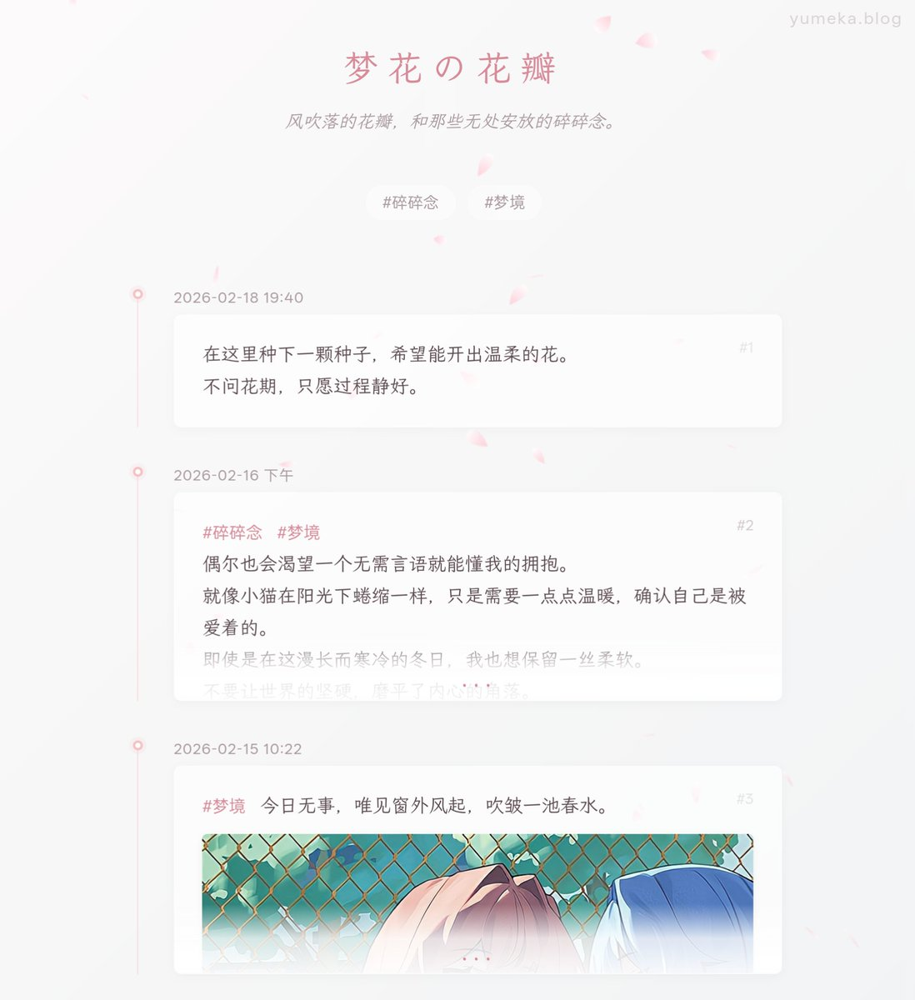

听羽 🏳️⚧️
@tingxinzhongyu
@YMKxxxxxxxx 哇哦好厉害～

𝘠𝘶𝘮𝘦𝘬𝘢 ✨🍀
@YMKxxxxxxxx
开源了一个纯前端专门放碎碎念的页面，要被美哭了www
半夜弄了好久的，看看效果！https://t.co/mvUpxCa0gC
以后碎碎念就都放在这里了，会随着时间慢慢填满
仓库地址：
https://t.co/8o6KRZBoM4
上午写了了半天文档和部署demo，超辛苦的QAQ https://t.co/jtIdqLS0lI